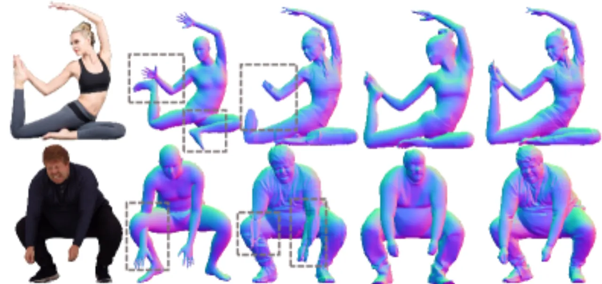
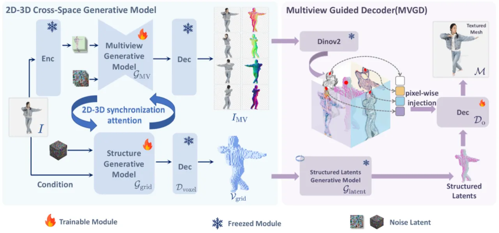
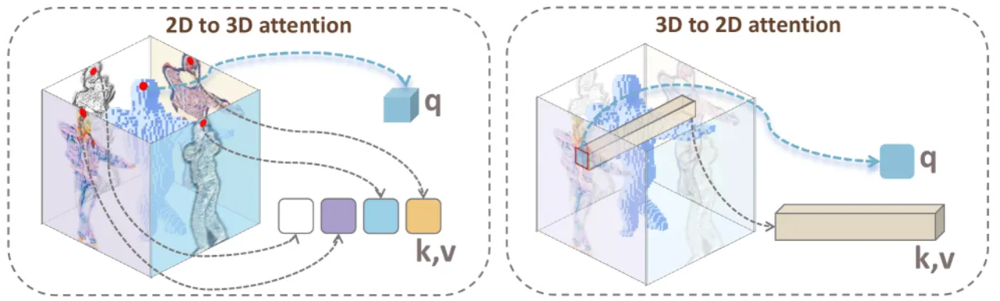
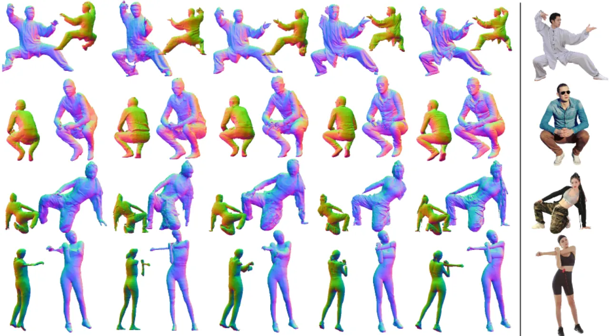
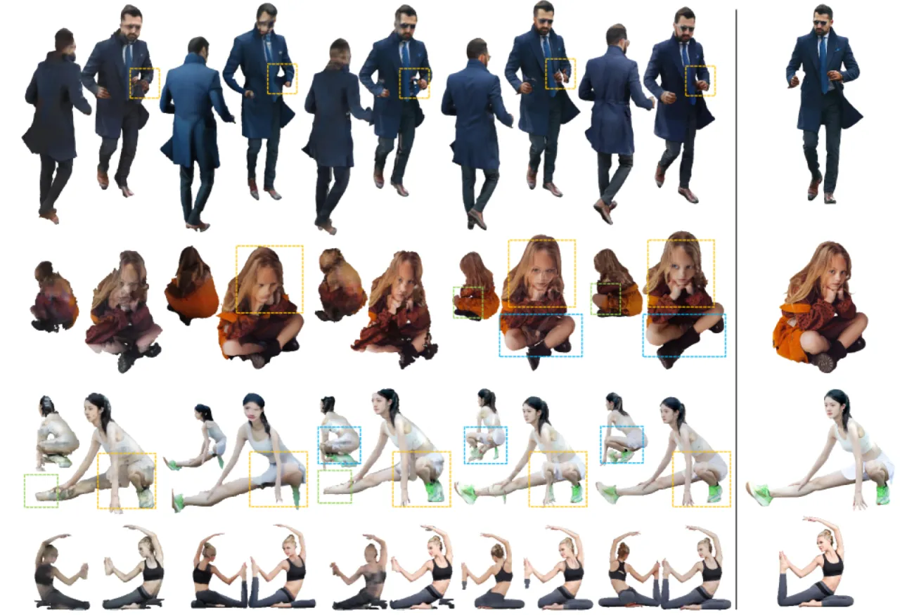
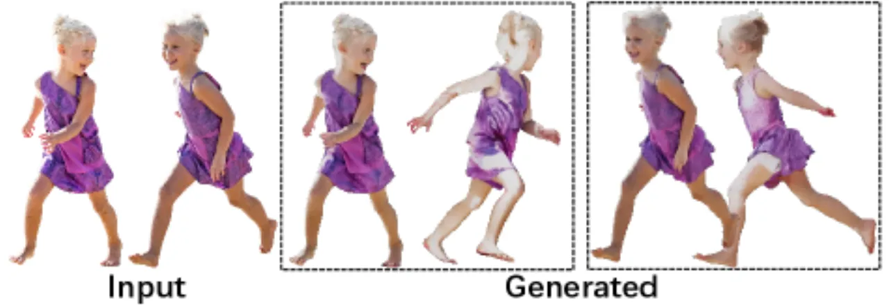

SyncHuman 将多视图 2D 生成模型与 3D 原生生成模型联合训练，通过像素对齐的双向同步注意力机制，使二者在扩散过程中互相校正，从单张图像重建出几何精确、纹理丰富的着装人体三维模型。
从单张图像重建穿衣人体的三维模型，是计算机视觉中的核心难题。现有方法面临两难困境：多视图 2D 生成模型（如 PSHuman）能捕捉精细纹理细节，但生成的多视图图像与三维结构缺乏一致性；而 3D 原生生成模型（如 Trellis）能生成连贯的几何形状，却缺乏精细细节，且严重依赖不准确的 SMPL 姿态估计。
"我们提出了一种新型框架，联合利用多视图和 3D 原生生成模型的优势，同时克服各自的局限性。"

SyncHuman 由两个核心模块构成：2D-3D 跨空间生成模型（通过双向同步注意力联合微调多视图与 3D 生成器）和多视图引导解码器（MVGD）（将 DINOv2 特征从生成的多视图图像注入 3D 解码过程），二者共同实现从单张图像到高保真三维人体的重建。

在扩散去噪过程中，本文设计了双向的像素对齐同步注意力，使 2D 多视图分支与 3D 体素分支在每个时间步互相感知：
训练采用结合 2D 和 3D 分支的 Flow Matching 损失。整体框架无需 SMPL 作为条件，仅以输入图像的 DINOv2 特征为条件进行生成。

在生成阶段结束后，MVGD 从生成的多视图彩色图和法线图中提取 DINOv2 特征，通过拼接（concatenation）和 MLP 层注入 FlexiCubes 解码器，将精细的视觉细节从 2D 图像域提升到三维几何域，显著提升表面法线一致性和纹理保真度。
在 CAPE-NFP、CAPE-FP 和 X-Humans 三个测试集上（共 250 个扫描样本）评估几何精度（Chamfer Distance、P2S、Normal Consistency）和渲染质量（PSNR、SSIM、LPIPS）指标，与 ICON、ECON、GTA、SIFU、SiTH、Human3Diff、PSHuman、Trellis 等基线比较。
| 方法 | Cham. Dist ↓ | P2S ↓ | NC ↑ | PSNR ↑ | SSIM ↑ | LPIPS ↓ |
|---|---|---|---|---|---|---|
| ICON | 1.4971 | 1.3920 | 0.8133 | — | — | — |
| ECON | 1.6425 | 1.4398 | 0.8054 | — | — | — |
| GTA | 1.5050 | 1.4662 | 0.8044 | 20.0084 | 0.8502 | 0.1129 |
| SIFU | 1.5391 | 1.4331 | 0.8093 | 20.6747 | 0.8455 | 0.1104 |
| SiTH | 1.5104 | 1.4345 | 0.7972 | 19.8245 | 0.8204 | 0.1182 |
| Human3Diff | 1.5034 | 1.4219 | 0.7468 | 19.7181 | 0.8065 | 0.1334 |
| PSHuman | 1.4377 | 1.1385 | 0.8393 | 20.8405 | 0.8523 | 0.0980 |
| Trellis | 2.0043 | 1.5053 | 0.7718 | 17.0786 | 0.7238 | 0.1529 |
| SyncHuman（Ours） | 0.8353 | 0.7593 | 0.8872 | 21.8385 | 0.8741 | 0.0786 |


Table 2 验证了 2D-3D 跨空间同步模型的有效性：单独使用 Trellis（PSNR 17.079）或 PSHuman（PSNR 20.840），加入双向同步注意力后提升至 PSNR 21.838，Chamfer Distance 从 1.438 降至 0.835。Table 3 验证 MVGD 的贡献：相比原始解码器（微调后 PSNR 21.362），MVGD 将 PSNR 进一步提升至 21.838，并将 Chamfer Distance 从 0.887 降至 0.835。
| 消融配置 | PSNR ↑ | SSIM ↑ | LPIPS ↓ | Cham. ↓ | P2S ↓ |
|---|---|---|---|---|---|
| Trellis（原始） | 17.079 | 0.724 | 0.153 | 2.004 | 1.505 |
| Trellis（微调） | 20.344 | 0.844 | 0.101 | 1.135 | 1.041 |
| PSHuman | 20.840 | 0.852 | 0.098 | 1.438 | 1.138 |
| 原始解码器（微调） | 21.362 | 0.866 | 0.090 | 0.887 | 0.810 |
| 完整 SyncHuman | 21.838 | 0.874 | 0.079 | 0.835 | 0.759 |

论文明确指出："由于训练数据集使用均匀光照渲染，重建纹理在极端光照条件下可能出现伪影。"该问题源于训练集（THuman2.1 等）的渲染设置，导致模型对非均匀光照场景泛化能力有限。
论文明确指出："多视图生成模型仅从约 5,000 个人体扫描中微调自 SD 2.1，因此生成质量仍受到限制。"与通用扩散模型的数十亿图像训练相比，人体领域特定数据的稀缺制约了模型的泛化上限。
方法使用 FlexiCubes 进行网格提取，该方法不强制水密（watertight）约束，可能导致生成网格出现表面孔洞，影响下游应用（如物理模拟、3D 打印）的适用性。
由于需要同时运行 2D 多视图分支和 3D 体素分支，并加入双向注意力交互，SyncHuman 的推理时间（38.57 秒/张）约为 Trellis（15.68 秒/张）的 2.5 倍，在实时或高吞吐量场景下存在明显瓶颈。